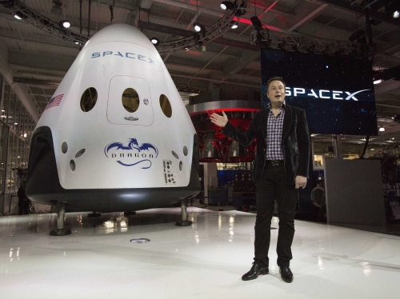
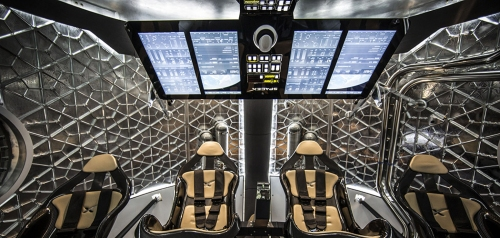
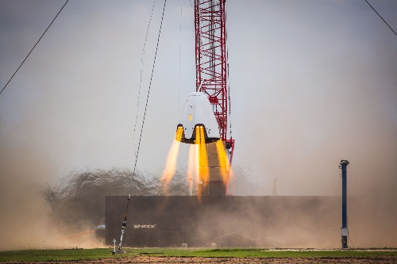

Dragon is a free-flying spacecraft designed to deliver both cargo and people to orbiting destinations. Dragon
made
history in 2012 when it became the first commercial spacecraft in history to deliver cargo to the International
Space
Station and safely return cargo to Earth, a feat previously achieved only by governments. It is the only
spacecraft
currently flying that is capable of returning significant amounts of cargo to Earth. Currently Dragon carries
cargo to
space, but it was designed from the beginning to carry humans. Under an agreement with NASA, SpaceX is now
developing
the refinements that will enable Dragon to fly crew. Dragon's first manned test flight is expected to take place
as
early as 2018.
Configurations:

Drgaon Capsule
Cargo - Resupply the Space Station
DELIVERY AND RETURN SERVICES - Dragon is the first commercial spacecraft to deliver cargo to the
International Space
Station and currently the only cargo spacecraft flying capable of returning significant amounts of cargo to
Earth.
Dragon accommodates pressurized cargo in the capsule as well as unpressurized cargo in its trunk.
VERSATILE CARGO RACKS - The racks are a honeycomb carbon-aluminum construction designed for efficient packing
in a
zero-gravity environment. They accommodate a variety of standard-size NASA cargo bags as well as freezers for
carrying
materials such as biological samples.

Dragon Crew
Crew - Taking Humans into Space
PARTNERSHIP WITH NASA - Dragon was designed from the outset to fly humans to space. Under an agreement with
NASA,
SpaceX is making upgrades to Dragon to allow for crew carrying capability.
CREW UPGRADES - Dragon will be the world's safest and most reliable crew transport vehicle, with seating for
seven,
life-support systems, controls with manual capability, and a powered launch escape system.
FIRST LAUNCH - Upgrades to Dragon are currently in progress. Dragon's first manned test flight is expected to
take
place as early as 2018.

Drgaon Capsule
Dragon Lab - A FREE-FLYING MICROGRAVITY LABORATORY
FACILITATING RESEARCH - DragonLab is a free-flying, unmanned platform designed for research and testing in a
microgravity environment independent of the International Space Station.
LONGEVITY - It can transport payloads, experiments, instruments, and sensors into space and back to Earth on
missions ranging from one week to two years.
CAPABILITIES - DragonLab can readily accommodate instrument and sensor testing, space physics and relativity
experiments, radiation effects research, and many other microgravity tests.